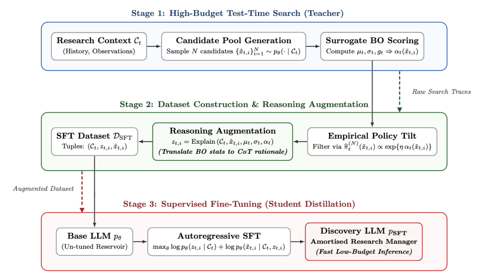
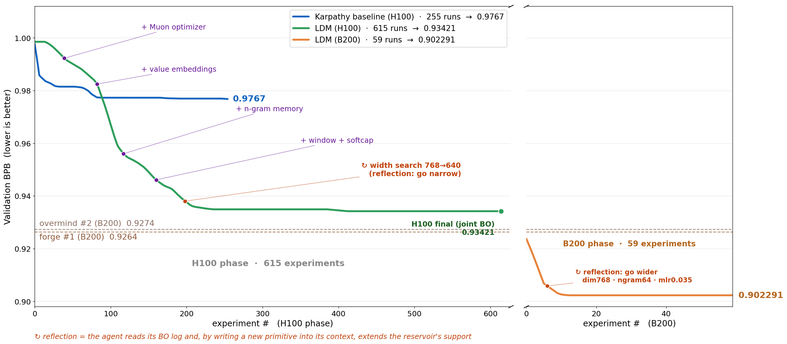

Large Discovery Models: Empirically-Grounded Model-Based Open-Ended Search
TL;DR
- The Large Discovery Model (LDM; arXiv 2608.15669, Jun Wang's group at UCL, with code and weights released) couples an LLM's structured prior with a Gaussian-process reward surrogate, and steers generation with an acquisition value — decision value under uncertainty — rather than a reward-model score: the search policy is the closed-form tilt \(\pi_t(x)\propto p_{\theta,\alpha}(x\mid\mathcal{C}_t)\exp\{\eta\,a_t(x)\}\).
- A fast loop (propose → score with the surrogate → evaluate empirically → update surrogate + context) runs within a task; a slow loop distills accumulated search traces into the LLM's weights via reasoning-augmented SFT, so discovery expertise amortizes across tasks.
- On Karpathy-style AutoResearch (LLM speedrunning of NN training), LDM reaches 0.902291 validation BPB on B200 — ahead of the leaderboard's prior best entries (~0.926–0.927) — with a 2.4× larger BPB reduction than LLM-only reflection; antibody design improves binding energy 18.2% and molecular design Pareto hypervolume by >60%.
Why this matters
Self-improving research agents tracked here (Prime Agent's autoresearch, DataSmith, AQuA) share a weakness: the loop's judgment about what to try next is usually the LLM's own reflection, and LLM self-assessments are miscalibrated exactly where discovery happens — on novel candidates outside the observed distribution. LDM's move is to bolt the oldest tool in sample-efficient optimization, Bayesian optimization, onto the newest one: the LLM proposes and reshapes the reachable frontier (something BO over a fixed space cannot do), while a GP grounded in actual experimental observations decides which proposals deserve compute or costly evaluation. The formal framing — discovery as moving unknown unknowns into the modeled space, exploration as resolving known unknowns, exploitation as harvesting known knowns — gives a vocabulary for why pure-reflection agents plateau: they exploit and discover, but have no calibrated notion of what they don't know.
The slow loop is the part squarely in this tracker's core interests: it is distillation of a search policy — the acquisition-tilted behavior, including its uncertainty-driven decisions — into base weights, on-policy in the sense that the data is the agent's own search traces.

The consolidation pipeline from the paper: (1) high-budget test-time search generates candidates scored by the GP surrogate; (2) traces are filtered by an empirical policy tilt \(\hat\pi_t^{(N)}(\hat x)\propto\exp\{\eta\,a_t(\hat x)\}\) and augmented with rationales \(z=\mathrm{Explain}(\mathcal{C}_t,\hat x,\mu_t,\sigma_t,a_t)\) translating BO statistics into chain-of-thought; (3) autoregressive SFT \(\max_\theta \log p_\theta(z\mid\mathcal{C})+\log p_\theta(\hat x\mid\mathcal{C},z)\) yields a "Discovery LLM" that amortizes the search policy for cheap inference.The core idea
At iteration \(t\), with evaluation history \(\mathcal{D}_t=\{(x_i,r_i)\}\) and search context \(\mathcal{C}_t\), LDM asks for a search distribution that maximizes expected acquisition value while staying close to the LLM prior:
where \(p_{\theta,\alpha}\) is the LLM proposal under inference configuration \(\alpha\) (prompting, temperature, refinement scheme, compute budget) and \(\eta\) sets the tilt strength. By the Gibbs variational principle the unique maximizer is the exponentially tilted distribution
the same mathematical object as KL-regularized RLHF policies — but tilted by an acquisition function, not a reward model. With a GP surrogate \(R(x)\sim\mathcal{GP}(m,k)\) posterior-updated on \(\mathcal{D}_t\), the running example is UCB:
whose two terms make the triangle explicit: the LLM reservoir term realizes discovery (expanding what is proposable at all), the high-\(\sigma_t\) tail realizes exploration, the high-\(\mu_t\) mode exploitation. Taking the mode under a temperature-form prior gives the bandit-style selection rule \(x_{t+1}=\arg\max_x[\alpha\log p_\theta(x\mid\mathcal{C}_t)+\eta\,a_t(x)]\); the limits recover pure LLM reflection (\(\eta\to0\)) and classical BO (\(\alpha\to0\)) — LDM lives between them. Crucially the acquisition value governs not just which candidates get evaluated but how inference compute is allocated — sampling, ranking, refinement, and branch expansion all consult it.
How it works
\(Z_t\) is never computed; the tilted policy is approximated by inference-time search (LDM-TTS), and periodically consolidated into weights:
Algorithm: LDM fast loop (within-task) + slow loop (across tasks)
Input: LLM p_θ, GP surrogate, acquisition a_t (e.g. UCB), tilt η, budgets N, H
# ---- fast loop: one discovery iteration t ----
1. Propose: sample N candidates {x̂_i} ~ p_θ,α(· | C_t) # C_t = history,
each expanded into H hypothesis/refinement branches # stats, feedback
2. Score: GP posterior gives (μ_t, σ_t) per candidate; compute a_t(x̂_i)
3. Refine/allocate: spend further reasoning & branch expansion on
high-acquisition candidates (approximate draw from tilted π_t)
4. Select batch B_t (highest acquisition), run REAL experiments
(train the NN / fold-score the antibody / dock the molecule)
5. Update: D_{t+1} = D_t ∪ {(x, r)}; refit GP; write results,
surrogate stats, and constraint feedback into context C_{t+1}
# ---- slow loop: after enough traces across tasks ----
6. Collect all (C_t, x̂, μ, σ, a) from TTS logs
7. Filter by empirical tilt π̂ ∝ exp{η·a} (keep decision-valuable traces)
8. Augment: z = Explain(C, x̂, μ, σ, a) # BO statistics -> CoT rationale
9. SFT: max_θ log p_θ(z|C) + log p_θ(x̂|C,z)
10. Deploy fine-tuned proposer as stronger prior for the next task
The surrogate is deliberately non-parametric: GPs give exact Bayesian updates and calibrated uncertainty from few samples, which is what makes the loop sample-efficient on-policy learning — every experiment immediately reshapes the acquisition landscape without any gradient step. The three test domains instantiate "experiment" very differently: an autonomous research loop over NN training code (Karpathy's AutoResearch setting), antibody CDRH3 sequence design (a combinatorial space the thread describes as 20^11), and multi-objective small-molecule optimization.
Results
- AutoResearch (validation bits-per-byte, lower better). From identical initial conditions, LDM on H100 runs 615 experiments to reach 0.93421 vs the Karpathy-baseline agent's 0.9767 (255 runs) — a 2.4× larger absolute BPB reduction than LLM-only reflection. Switching to B200, 59 further experiments reach 0.902291, past the prior leaderboard entries shown at ~0.9264–0.9274. The annotated trajectory (below) is the most instructive artifact: discrete drops line up with the agent adopting Muon, value embeddings, n-gram memory, window+softcap attention — and with reflection events where the agent, reading its own BO log, widens the search space (e.g. "go wider: dim768 · ngram64").
- Antibody design: 18.2% lower mean binding energy than LLM-only reflection after 200 evaluation steps, beating both LLM-only and BO-only baselines across five antigens.
- Molecular optimization: Pareto-front hypervolume +62.4% over LLM-only reflection and +63.1% over classical MOBO.
- Ablations: acquisition-guided search beats predicted-reward-only guidance (the σ term earns its keep); reasoning-augmented fine-tuned proposers (Qwen3.5-9B) outperform their base counterparts inside the same acquisition-guided loop on both AutoResearch and antibody design — the slow loop transfers.
- A regret analysis separates surrogate error from LLM-search suboptimality (Section 5; not examined in detail here).

AutoResearch trajectory from the paper: LDM (H100, 615 runs) descends past the Karpathy baseline to 0.93421; the B200 phase reaches 0.902291 in 59 runs. Orange annotations mark reflection events where the agent extends the reservoir's support by writing new primitives into its own context.How it connects
- Prime Agent and Meta-Harness do outer-loop search over harness code with LLM judgment; LDM formalizes what those loops lack — a calibrated, continually-updated model of which experiment is worth running. The obvious hybrid: RLM-style harnesses with a GP surrogate over experiment outcomes.
- AQuA (tracked under self-improving) is the safety complement: it seals data paths and evaluators so self-improving experiment loops can't build on leaky results. LDM's verification story is thinner — the surrogate grounds value, not experimental validity.
- The slow loop belongs to the on-policy distillation lineage (OPD survey, TGOPD): here the "teacher" is the agent's own high-budget acquisition-tilted search, and the reasoning augmentation step — translating GP statistics into CoT — is a nice trick for making numeric supervision distillable as language.
- The tilted-policy form is literally the RLHF/DPO closed form with \(a_t\) swapped in for reward — connecting BO acquisition to the KL-regularized policy toolkit this tracker's RL section lives in.
Critical take
The headline "world #1 on AutoResearch" deserves scrutiny on compute grounds: LDM's H100 phase runs 615 experiments against the baseline's 255, so part of the gap is budget, not intelligence — the fairer evidence is the slope (the B200 phase gains most of its margin in ~59 runs) and the 2.4× claim, which the paper says holds "under identical initial conditions" but is still a single-trajectory comparison in a noisy setting. GPs also need a kernel, and over programs/sequences/molecules the kernel choice (buried in Appendix C) is doing enormous unacknowledged work — "Bayesian non-parametric" sounds assumption-free but the smoothness structure it imposes on, say, the space of training-code edits is exactly where this could fail silently on a new domain (inferred from the setup — verify kernel details in the paper). The four-regime epistemology is elegant, but "unknown knowns" (memory retrieval, federated discovery) is explicitly future work, so the framework is one-third aspiration. Finally, all three domains have cheap-ish, automated, trustworthy evaluators; the authors' own tweet-thread framing ("verification-gated") glosses that LDM has no defense against a corrupted or gameable evaluator — pair it with AQuA-style sealing before believing a self-reported leaderboard number. None of this diminishes the core contribution: acquisition value is the right currency for allocating test-time compute in discovery loops, and someone finally wrote down the LLM version cleanly.
If you remember three things
- Tilt the LLM by acquisition, not reward: \(\pi_t(x)\propto p_{\theta,\alpha}(x\mid\mathcal{C}_t)\exp\{\eta\,a_t(x)\}\) with a GP-posterior UCB — uncertainty gets a vote in what to try, which reward models and self-reflection structurally cannot provide.
- Fast loop grounds, slow loop amortizes: experiments update a GP surrogate in real time; accumulated tilted search traces, reasoning-augmented into rationales, are SFT-distilled back into the proposer so discovery skill transfers across tasks.
- The numbers: 0.902291 BPB on AutoResearch (B200, 59 runs; prior entries ~0.926+), 2.4× the BPB reduction of LLM-only reflection, 18.2% better binding energy, >60% hypervolume gains — one framework, three modalities, weights and code released.